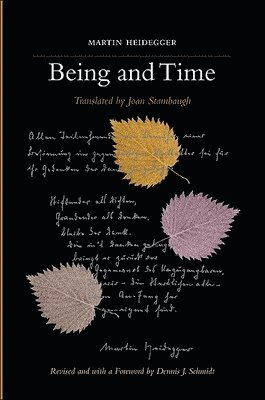

Being and Time
More Information
See this linkPlot:
"Being and Time" is a philosophical treatise by Martin Heidegger, published in 1927. It explores the nature of human existence (Dasein) and the temporal aspects of being. Heidegger examines authenticity versus inauthenticity in how individuals engage with the world, and delves into the role of language and truth in shaping our understanding of being.